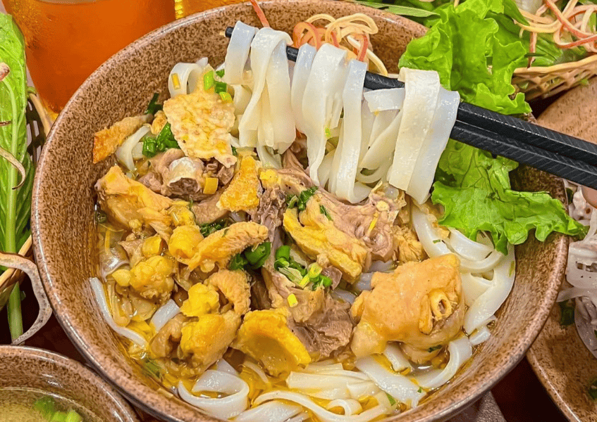
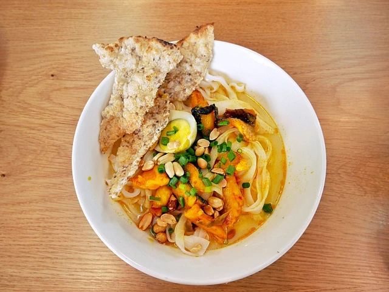
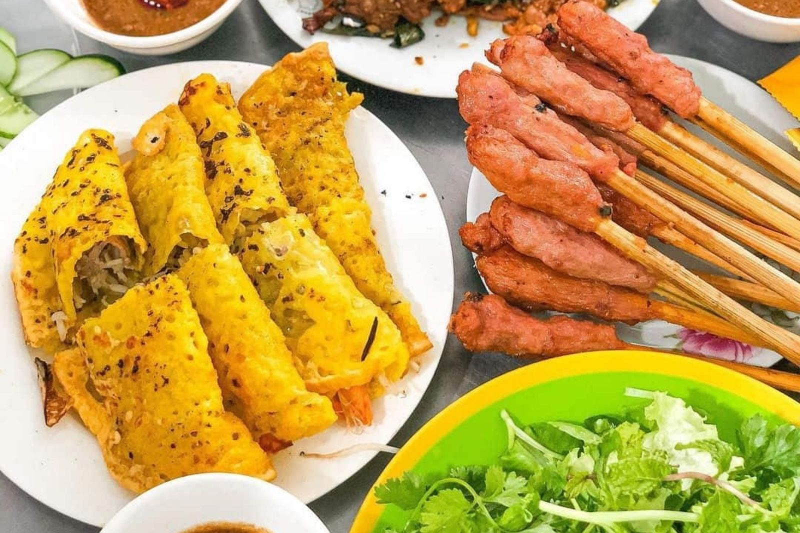
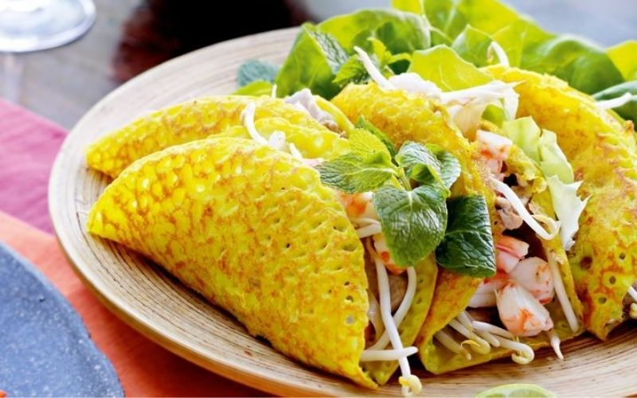
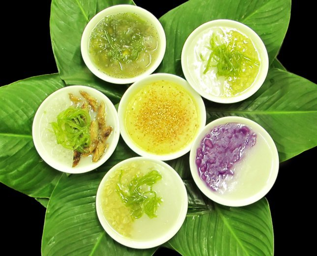
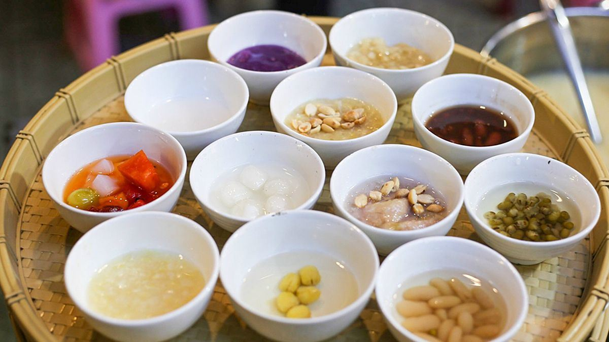

Ẩm thực miền Trung mang đậm dấu ấn của vùng đất nắng gió, nơi con người luôn cần cù và sáng tạo trong từng món ăn. Hương vị đặc trưng của miền Trung là sự đậm đà, cay nồng và có phần mạnh mẽ hơn so với hai miền còn lại.
Các món ăn nơi đây thường được chế biến công phu, chú trọng đến màu sắc và sự hài hòa trong cách trình bày. Từ những món dân dã đời thường cho đến ẩm thực cung đình Huế, tất cả đều thể hiện nét tinh tế và bản sắc riêng biệt của vùng đất miền Trung thân thương.


Mì Quảng là niềm tự hào của ẩm thực xứ Quảng, chinh phục thực khách bởi sự mộc mạc nhưng vô cùng đậm đà. Sợi mì gạo trắng mềm, dày vừa phải, được chan cùng phần nước dùng xăm xắp nấu từ xương và gia vị đặc trưng.
Nhân mì thường gồm tôm, thịt heo hoặc gà rim thấm vị, đôi khi có thêm trứng cút hoặc cá lóc. Món ăn trở nên trọn vẹn khi ăn kèm lạc rang, bánh tráng nướng giòn rụm và thật nhiều rau sống tươi mát. Sự hòa quyện giữa vị béo, vị ngọt và chút cay nhẹ tạo nên trải nghiệm vị giác đầy ấn tượng.
Một số quán ăn nổi tiếng: Mì Quảng Bà Mua, Mì Quảng 1A, Mì Quảng Ếch Bếp Trang,...


Bánh xèo miền Trung là món ăn dân dã nhưng đầy sức hút. Khác với bánh xèo miền Nam, bánh xèo miền Trung có kích thước nhỏ hơn, lớp vỏ mỏng và giòn tan. Bột bánh được pha khéo léo để tạo màu vàng ươm hấp dẫn.
Nhân bánh thường gồm tôm đất tươi, mực sữa hoặc thịt bò kết hợp với giá đỗ thanh mát. Khi thưởng thức, thực khách cuốn bánh trong bánh tráng cùng rau sống và vả chát, rồi chấm vào nước mắm đậu phộng béo bùi hoặc mắm tỏi ớt cay nồng. Tất cả tạo nên sự bùng nổ hương vị đặc trưng của miền Trung.
Một số quán ăn nổi tiếng: Bánh Xèo Bà Dưỡng, Ẩm Thực Năm Hiền - Bánh Xèo Tôm Nhảy,...


Chè cung đình Huế là tinh hoa ẩm thực của cố đô, biểu tượng cho sự thanh tao và cầu kỳ trong nghệ thuật ẩm thực. Với hơn 36 loại chè khác nhau, mỗi loại đều mang hương vị và cách chế biến riêng biệt.
Nguyên liệu được tuyển chọn kỹ lưỡng như hạt sen Tịnh Tâm, nhãn lồng, đậu ngự hay bột lọc bọc heo quay độc đáo. Khi thưởng thức, người ta thường nhâm nhi từng chút một trong bát sứ nhỏ để cảm nhận vị ngọt thanh dịu dàng, giúp thư giãn tâm hồn giữa không gian xứ Huế mộng mơ.
Một số quán chè nổi tiếng: Chè Hẻm (Hùng Vương), Chè Mợ Tôn Đích,...